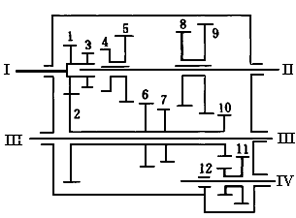
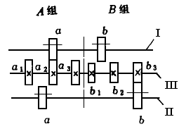
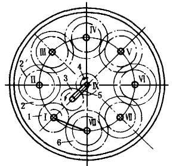
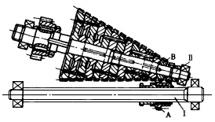

| 有级变速传动机构 |
机构示意图 |
机构特性简介 |
 |
����图示圆柱齿轮变速机构为跃进牌NJ130汽车变速器，它有四个前进档和一个倒档。主动轴I上的齿轮1与中间轴III上的齿轮2啮合，空套在中间轴上的齿轮2与齿轮6、7、10是一体的。变速时，由变速机构控制从动轴II上的齿套4和齿轮5、8、9，使它们分别与齿环3、齿轮6、7、10啮合，并通过4和5、8和9与轴II的花键联接带动从动轴II。齿环3与齿套4啮合为直接档，传动比i 34 =1。当齿轮10与11啮合，由齿轮12驱动9为倒档。
����图示没有表示出变速控制机构。
|
 |
����图中轴 I、II、III相在平行的三根轴，轴I、III和轴III、II的中心距相等。在轴I、II上各有两个滑移齿轮a、b，可分别与轴III上的A、B两组公用固联齿轮啮合。各组齿轮模数相等，齿数不同但齿数差小于4。利用齿轮变位凑中心距，实现无侧隙啮合，获得多组变速。设III轴上有N个齿轮，变速级数为K，则：
����K=N(N-1)+1
����该机构的各档传动比具有倒数关系，若用它作切制公制或英制螺纹的基本传动组时，不需改变传动路线，可省去改换机构的麻烦和简化操作。也可用于按等差或等比级数排列变速，但设计计算较复杂。
|
 |
����图示沿圆周方向布置的齿轮变速机构将各齿轮轴绕从动轴IX依定长半径沿圆周布置，包括主动轴I和中间轴II～ VIII。第一档为主动轮1通过惰轮3驱动从动轮4，轮1与轮4转向相同，传动比i14=z4/z1。其余各档由转动手柄5控制，如第二档为l-2-2'-3-4齿轮啮合传 动，从动轮在单数档和双数档转向相反。欲使转向恒定，可采用另外附加精轮的方式布置。图上的齿轮1和6是不会啮合的。
���� 沿圆周布置可缩小机构尺寸，尤其是明显的缩短了轴向尺寸。
|
 |
����图中花键轴I上装有一可滑动的直齿圆柱齿轮A，可与轴II上的等高直齿圆锥齿轮组B中的任一锥齿轮啮合。锥齿轮组的各轮齿数按等差级数变化，由销子联接固定，保证所有锥齿轮有一齿槽在共同一条直线上，各齿轮之间留有足够的空隙，以便操纵主动轮A顺利由原来啮合位置脱离，并滑入另一啮合位置完成多级变速。
����该机构在运转中可进行变速，变速级数多、齿轮数少、结构紧凑、刚性好，但啮合性能较差，啮合轮齿不能沿全齿宽啮合，且磨损不均匀。
|